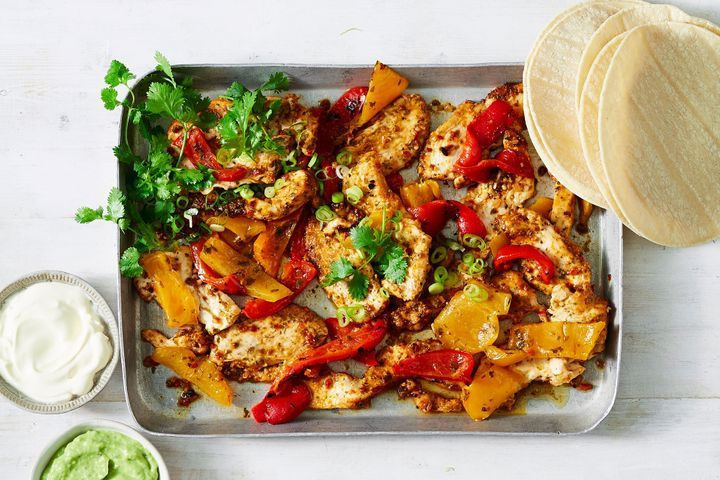

Chicken Fajita

Why Chicken Fajita?
Need dinner in a flash? This spicy Mexican-inspired tray bake will be ready in under 10 minutes, just chuck it all on the pan and you're ready to roll.
Ingredients
- 1 1/2 tbsp extra virgin olive oil
- 600g chicken breast stir-fry
- 40g packet spice mix for fajitas
- 12 small white corn tortillas
- 2 green shallots
- 280g jar Coles Chargrilled Peppers, drained, coarsely chopped
- 200g tub avocado dip
- Crème fraîche, to serve
- Fresh coriander sprigs, to serve
Directions
- Preheat grill on high. Drizzle half of the 1 tbs oil over a baking tray. Place the tray under the grill to heat.
- Cook the sausage. Meanwhile, heat olive oil in a large pot (or 4 qt. Dutch oven) for 2 minutes over medium-high heat until the hot oil sizzles. Add sausage and stir to cook until browned, about 5-7 minutes. Use a spatula to break the sausages into small pieces. Add onions and garlic and sauté until soft and tender, about 2-3 minutes. Stir to combine.
- Make the sauce. Pour in tomato sauce, turn the heat down to medium, and bring the meat sauce to a simmer, stirring occasionally. Stir in Italian seasoning, ½ cup Parmesan cheese, parsley and basil. Season with salt and pepper. Turn the heat down to low and simmer for 5-7 minutes, stirring occasionally. Simmering helps develop richer flavour in the sauce.
- Add the pasta. Transfer the cooked and drained pasta into the sauce and toss well to mix evenly.
Home